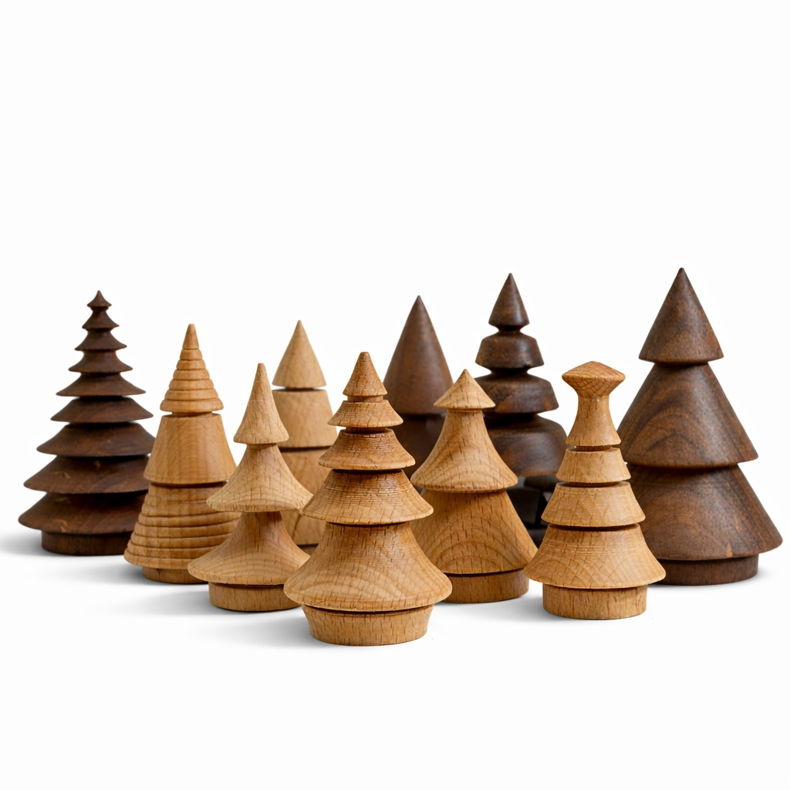

Available Works
This page lists Studio Aprile works that are currently available as static entries, using the same layout and typographic system as the rest of the site.
Current availability
#0301-25
Beech and walnut wood
Approx. Ø3cm × h6–8cm
Herne Hill · 2025
Small turned tree forms produced from naturally dried solid wood. Variations in grain, density and drying create subtle differences in proportion, surface and tone, so each piece remains materially distinct.
How to enquire
Availability is handled directly by email rather than through a cart or automated checkout.
For purchase enquiries, please contact info@studioaprile.com and include the work reference above.
Shipping
Shipping, collection and delivery timings are confirmed individually at the point of enquiry.